whistles
The largest publicly available dolphin-vocalization corpus to date.
A Large-Scale Longitudinal Dataset and Benchmark
of Bottlenose Dolphin Vocalizations
An open, longitudinal resource for learning the fine-grained structure of dolphin communication.
01 / THE GAP
Most animal-audio corpora cover many species with only a shallow sample of each. That is useful for species recognition, but not enough to study one communication system over time.
OpenWhistle follows a stable, known pod in a semi-natural marine environment—preserving the scale, continuity and acoustic messiness needed for new questions.
02 / THE DATASET
One species.
Unprecedented depth.
The largest publicly available dolphin-vocalization corpus to date.
Raw acoustic material suited to large-scale self-supervised pretraining.
Longitudinal recordings with contiguous sequences and changing social context.
Ten whistle types, manually reviewed for fine-grained evaluation.

Fixed hydrophones capture natural interactions at Dolphin Reef, Eilat. The repertoire pairs individually distinctive signature-whistle types with non-signature whistles.
03 / THE REPERTOIRE
Signature whistles are learned, individually distinctive calls. Their frequency contours remain recognizable through the real-world noise, overlap and variation preserved by OpenWhistle.
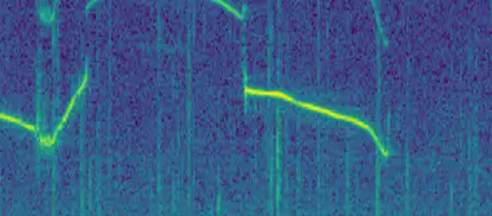


04 / THE PIPELINE
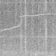
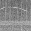
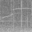
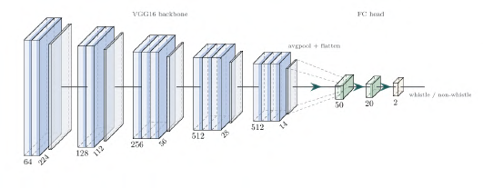
ImageNet backbone · FC 50 → 20 → 2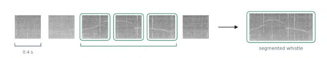
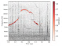
Dolphin CREPE · every 5 ms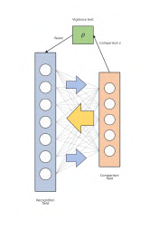
ARTwarpDTW · vigilance 90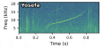
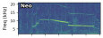
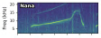
05 / THE BENCHMARK
Frozen representations are tested with the same linear probe. The original benchmark shows that a Wav2Vec2.0 encoder trained from scratch on OpenWhistle captures fine-grained structure better than general bioacoustic models.
Original six-class balanced benchmark · mean over bootstrap resampling. Higher is better.
Wav2Vec2.0 remains best on the full, naturally imbalanced expert set.
Best gain from OpenWhistle pretraining within the AVES-bio architecture.
Gain from using 100% instead of 50% of the pretraining corpus.
06 / WHAT COMES NEXT
Trace how a learned repertoire evolves across years and life events.
Model exchanges, turn-taking and interactions inside contiguous sequences.
Explore few-shot, active and semi-supervised learning where expert time is scarce.
Measure robustness as pod composition and acoustic conditions change.
07 / TEAM
1 Institut de Biologie de l’ENS (IBENS), Département de biologie, École normale supérieure, CNRS, INSERM, Université PSL, Paris, France · 2 Earth Species Project · 3 Not Diamond, San Francisco, USA · 4 Institut du Cerveau, Paris, France · 5 Sapienza University of Rome, Rome, Italy · 6 École Normale Supérieure, Paris, France · 7 Champalimaud Foundation, Lisbon, Portugal
CITATION
If you use OpenWhistle in your research, please cite our paper.
@inproceedings{mustun2026openwhistle,
title={OpenWhistle: A Large-Scale Longitudinal Dataset and Benchmark of Bottlenose Dolphin Vocalizations},
author={Mustun, Faadil and Semenzin, Chiara and Dessì, Roberto and Robin Guerrero, Pablo and Orhan, Pierre and Emanuelli, Alexis and Rossi, Emanuele and Lakretz, Yair and de Polavieja, Gonzalo G. and Sumbre, Germán},
booktitle={Advances in Neural Information Processing Systems},
year={2026},
note={Spotlight}
}